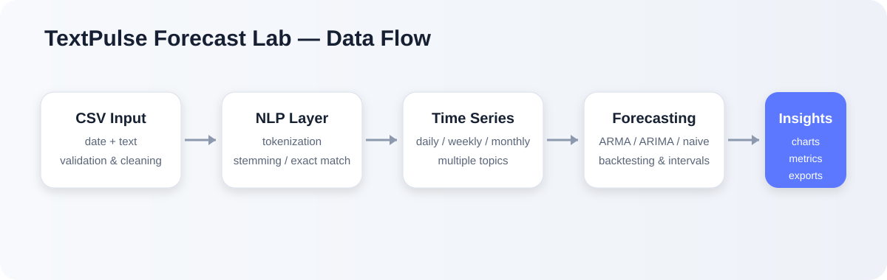

01
Reliable data preparation
Uploads are processed in memory. Date, text, duplicate, and blank-row checks are reported clearly before analysis begins.
TextPulse transforms support tickets, feedback, news headlines, survey comments, and incident reports into topic timelines, model comparisons, uncertainty ranges, and downloadable insights.
The project combines data validation, lightweight NLP, model evaluation, interactive visualisation, and exportable outputs in one reproducible application.
Uploads are processed in memory. Date, text, duplicate, and blank-row checks are reported clearly before analysis begins.
Compare several topics using exact matching or Porter stemming on daily, weekly, or monthly timelines.
Automatic backtesting compares compact ARMA/ARIMA candidates against a naive baseline before choosing a forecast.
Forecasts include confidence intervals, holdout metrics, residual diagnostics, AIC, BIC, and plain-language interpretation.
Plotly charts, topic suggestions, data previews, and filtering controls make the workflow understandable to non-specialists.
Tests, CI checks, Docker support, a Streamlit entry point, and CSV exports support reliable reuse and deployment.
Every stage is designed to expose assumptions and data quality instead of hiding them behind a single forecast number.
View the required CSV format →Read a CSV with date and text columns, then report invalid dates, blank text, and duplicates.
Tokenize text and apply exact matching or stemming to make topic counts consistent.
Aggregate topic mentions into evenly spaced daily, weekly, or monthly observations.
Evaluate statistical candidates and a naive benchmark using recent held-out observations.
Review uncertainty, diagnostics, interpretation, and downloadable CSV results.
The dashboard is separated from validation, text analysis, forecasting, command-line use, and tests so each component can evolve independently.

TextPulse is designed as a general analytical pattern rather than a single-purpose demo.
Track recurring complaints, service disruptions, product issues, and emerging customer concerns.
Measure attention to events, places, policies, risks, or infrastructure topics over time.
Turn dated open-text responses into comparable topic timelines for exploratory analysis.
Monitor issue categories and identify whether recent activity is stable, rising, or declining.
Use the interactive dashboard or review the open-source implementation, tests, and documentation on GitHub.